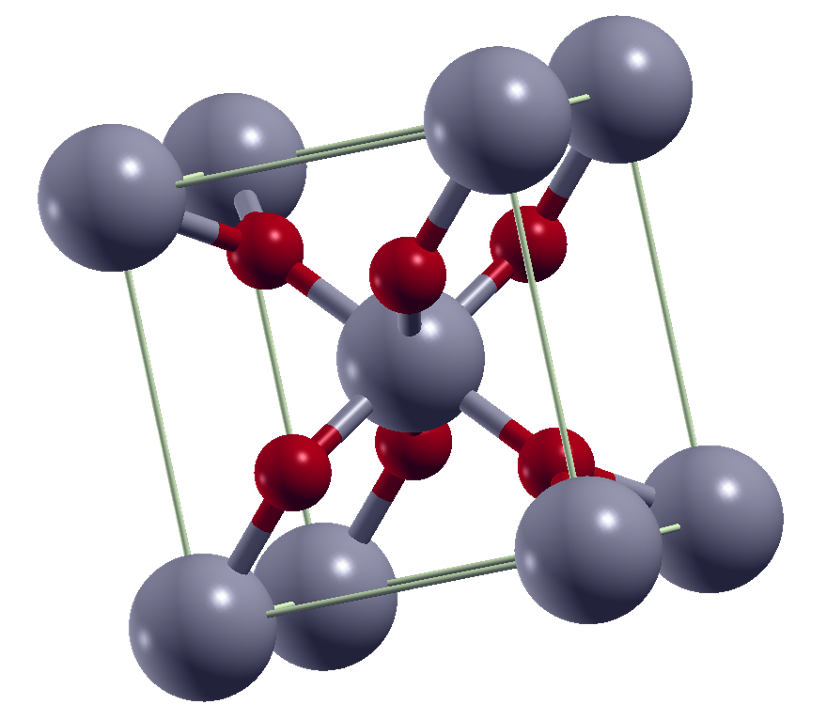
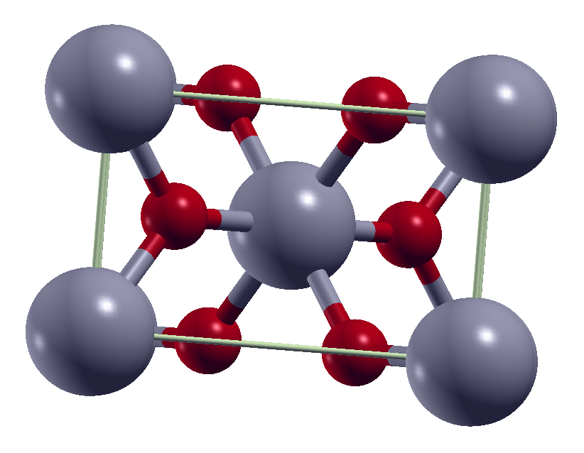

Data Portfolio | Chemical Simulation
3a | Geometry Optimisation for Periodic Crystals
This project aims to optimise the structures of a variety of periodic inorganic crystals in Quantum ESPRESSO, covering a variety of major structure types. The process is shown in detail for rutile (tetragonal TiO2), with further examples following the same workflow included. The structure and choice of parameters for the self-consistent field calculation input file is discussed. Where necessary, these parameters are then optimised and a variable cell relaxation calculation performed to provide the optimised cell coordinates.

Step 1 | Setup for Self-Consistent Field (SCF) Calculation
This section outlines the structure of an input file for Quantum ESPRESSO's plane wave executable (pw.x). Once written, several parameter values can then be optimised to ensure an appropriate level of accuracy in the simulation (see Section 2).
Documentation for the pw.x executable is available from the Quantum ESPRESSO website.
Cell parameters were sourced from experimental crystal structures where possible with the Materials Project as a fallback. For rutile, the experimental structure was sourced from the Inorganic Crystal Structure Database (ICSD 142924, Deposition #: 2187406), originally recorded in Poschmann et al. (DOI: 10.1002/ejic.202000555) The CIF file was interpreted using the Gemmi, pymatgen, and Atomic Simulation Environment (ASE) packages for Python, with the cell dimensions and atomic positions used directly for the SCF calculation.
Pseudopotentials were taken from the GBRV high-throughput pseudopotentials set produced by the Vanderbilt lab. The relevant reference is Comput. Mater. Sci., 2014, 81, pp.446 (PPs available from: https://www.physics.rutgers.edu/gbrv/).
The K point grid was chosen to provide a reasonably dense sampling, as this was possible for rutile's small unit cell without being too computationally expensive. As the unit cell is tetragonal, and the c-axis is shorter than the a- and b-axes, a finer sampling was used to maintain comparable sampling density in the reciprocal lattice.
Other parameter values were largely those suggested in the pw.x documentation. These include the starting values for kinetic energy cutoffs for wavefunctions ('ecutwfc') and for charge density and potential ('ecutrho'), which were then optimised in the next step.calculation = 'scf',
prefix = 'rutile',
outdir = './tmp/'
pseudo_dir = './pseudos/'
/
&SYSTEM
ibrav = 6 ! tetragonal unit cell
celldm(1) = 8.670 ! a in bohr, 4.59 angstroms
celldm(3) = 0.645 ! ratio c/a
nat = 6,
ntyp = 2,
ecutwfc = 20
ecutrho = 80 ! ecutwfc*4
/
&ELECTRONS
mixing_beta = 0.6
/
ATOMIC_SPECIES
Ti 47.867 Ti_pbe_v1.4.uspp.F.upf
O 15.999 O.pbe-n-kjpaw_psl.0.1.upf
ATOMIC_POSITIONS (crystal)
Ti 0.00000 0.00000 0.00000
Ti 0.50000 0.50000 0.50000
O 0.30479 0.30479 0.00000
O 0.19521 0.80479 0.50000
O -0.30479 -0.30479 0.00000
O 0.80479 0.19521 0.50000
K_POINTS (automatic)
6 6 9 0 0 0
Step 2 | Optimising Key Parameters: ecutwfc, ecutrho, degauss, K points
In order to optimise the calculation, a series of Linux shell scripts were used to vary the parameter of interest with a 'for do' loop. Once all calculations for a given parameter were run, the total energies were compared. Convergence was assumed once the variation from one value to the next fell below 0.005 Ry (with any remaining variation assumed to be due to temperature). Initially, the 'ecutwfc' value was optimised, then 'ecutrho', and finally the K points grid. For metallic systems, the 'degauss' parameter was also optimised simultanteously with the K points grid.
do
NK_C=$(awk -v nk="$NK" 'BEGIN {printf "%.0f\n", nk * 1.54}')
# 1.54 is used as approx reciprocal of ratio c/a
cat > ./opt/rutile_kpts${NK}.in << EOF
&CONTROL
calculation = 'scf',
prefix = 'rutile',
outdir = './tmp/'
pseudo_dir = './pseudos/'
/
&SYSTEM
ibrav = 6
celldm(1) = 8.67 ! a in bohr, 4.59 angstroms
celldm(3) = 0.645 ! c/a
nat = 6,
ntyp = 2,
ecutwfc = 50
ecutrho = 200
/
&ELECTRONS
mixing_beta = 0.6
/
ATOMIC_SPECIES
Ti 47.867 Ti_pbe_v1.4.uspp.F.upf
O 15.999 O.pbe-n-kjpaw_psl.0.1.upf
ATOMIC_POSITIONS (crystal)
Ti 0.00000 0.00000 0.00000
Ti 0.50000 0.50000 0.50000
O 0.30479 0.30479 0.00000
O 0.19521 0.80479 0.50000
O -0.30479 -0.30479 0.00000
O 0.80479 0.19521 0.50000
K_POINTS (automatic)
$NK $NK $NK_C 0 0 0
EOF
pw.x < ./opt/rutile_opt3_kpts${NK}.in > ./opt/rutile_opt3_kpts${NK}.out
done
(env) qe:~/folder/path$ grep ! ./opt/rutile_kpts*.out
./opt/rutile_kpts1.out:! total energy = -405.84521474 Ry
./opt/rutile_kpts2.out:! total energy = -405.91827793 Ry
./opt/rutile_kpts3.out:! total energy = -405.92442352 Ry
./opt/rutile_kpts4.out:! total energy = -405.92467186 Ry
./opt/rutile_kpts5.out:! total energy = -405.92473587 Ry
./opt/rutile_kpts6.out:! total energy = -405.92474148 Ry
./opt/rutile_kpts7.out:! total energy = -405.92474316 Ry
For rutile, 'ecutwfc' converged at 50 Ry. 'ecutrho' converged at 200 Ry. This was slightly unexpected as the Ti PP used is an ultrasoft potential, which often require higher ecutrho values than the typical 4 x ecutwfc. K point grid converged at 4 4 6 0 0 0 (corresponding to ./opt/rutile_kpts4.out in the example above).
Step 3 | Variable Cell Relaxation
Finally, a vc-relax calculation was run using the optimised values from step 2 to optimise the cell dimensions and atomic positions. This calculation required several additional parameters and the includion of '&IONS' and '&CELL' sections. In the main, the additional parameters provide convergence thresholds for the calculation. Many of these were added explicitly when earlier attempts failed to converge for rutile, but may not be necessary for other calculations. These are set to the pw.x documentation's suggested values, and while they are made explicit here, may have been included implicitly in earlier calculations.
The '&IONS' section here explicitly sets the algorithm used during relaxation ('ion_dynamics') and drops the intial ionic displacement used ('trust_radius_ini'). This latter change was made when earlier attempts failed to converge.
The '&CELL' section here explicitly sets the algorithm used during relaxation ('cell_dynamics'), pressure for the calculation ('press') and pressure convergence threshold ('press_conv_thr'). The degrees of freedom parameter ('cell_dofree = 'ibrav'') requires the calculation to retain the tetragonal lattice. 'cell_factor = 2.0' is a required parameter for construction of pseudopotential tables while optimising cell dimensions.
calculation = 'vc-relax',
prefix = 'rutile',
outdir = './tmp/'
pseudo_dir = './pseudos/'
forc_conv_thr = 1.0D-3
etot_conv_thr = 1.0D-5
verbosity = 'high'
tstress = .true.
tprnfor = .true.
/
&SYSTEM
ibrav = 6
celldm(1) = 8.670
celldm(3) = 0.645
nat = 6,
ntyp = 2,
ecutwfc = 50
ecutrho = 200
/
&ELECTRONS
conv_thr = 1.0D-8
mixing_beta = 0.6
/
&IONS
ion_dynamics = 'bfgs'
trust_radius_ini = 0.1
/
&CELL
cell_dynamics = 'bfgs'
press = 0D0
press_conv_thr = 0.5D0
cell_dofree = 'ibrav'
cell_factor = 2.0
/
ATOMIC_SPECIES
Ti 47.867 Ti_pbe_v1.4.uspp.F.upf
O 15.999 O.pbe-n-kjpaw_psl.0.1.upf
ATOMIC_POSITIONS (crystal)
Ti 0.00000 0.00000 0.00000
Ti 0.50000 0.50000 0.50000
O 0.30479 0.30479 0.00000
O 0.19521 0.80479 0.50000
O -0.30479 -0.30479 0.00000
O 0.80479 0.19521 0.50000
K_POINTS (automatic)
4 4 6 0 0 0
Results | Rutile
To assess the efficacy of my relaxation of rutile, the cell parameters were compared against experimental data and materials project simulations. In general, the unit cell dimensions from my calculation are slightly closer to the experimental data than those proposed by the materials project. The materials project calculated values for atomic positions are in slightly better agreement with the crystallographic data than mine are, however the difference is slight. My values are within about 1% of both sets of values for all measurements.

| Parameter | Calculation Result | Crystallographic Data | Materials Project Data |
|---|---|---|---|
| V (Å3) | 63.886 | 62.486 | 64.292 |
| a (Å) | 4.643 | 4.595 | 4.653 |
| b (Å) | 4.643 | 4.595 | 4.653 |
| c (Å) | 2.964 | 2.960 | 2.969 |
| Ti1 | 0.0000, 0.0000, 0.0000 | 0.0000, 0.0000, 0.0000 | 0.0000, 0.0000, 0.0000 |
| Ti2 | 0.5000, 0.5000, 0.5000 | 0.5000, 0.5000, 0.5000 | 0.5000, 0.5000, 0.5000 |
| O1 | 0.3051, 0.3051, 0.0000 | 0.3048, 0.3048, 0.0000 | 0.3046, 0.3046, 0.0000 |
| O2 | 0.1949, 0.8051, 0.50000 | 0.1952, 0.8048, 0.5000 | 0.1954, 0.8046, 0.5000 |
| O3 | -0.3051, -0.3051, 0.0000 | -0.3048, -0.3048, 0.0000 | -0.3046, -0.3046, 0.0000 |
| O4 | 0.8051, 0.1949, 0.5000 | 0.8048, 0.1952, 0.5000 | 0.8046, 0.1954, 0.5000 |
Precision used for each parameter is set equivalent to the least precise measurement. Atomic positions are given in fractional coordinates.